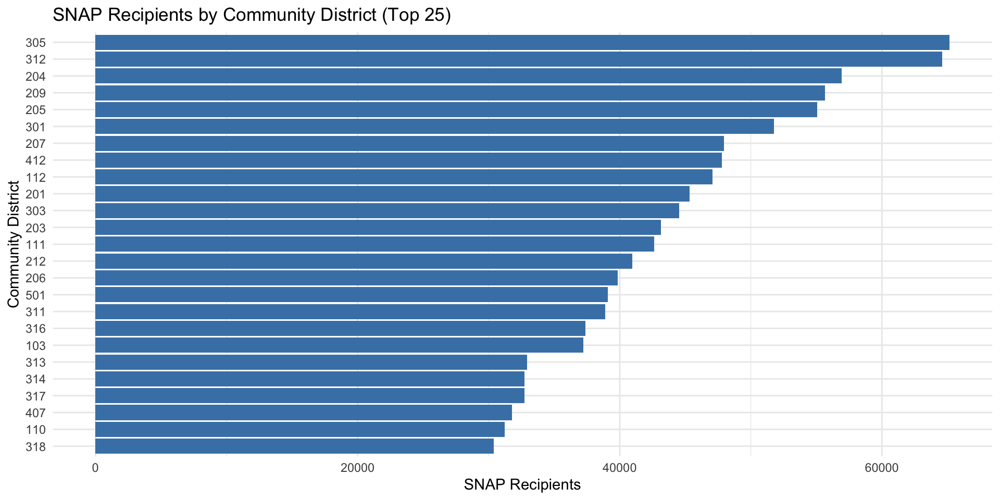
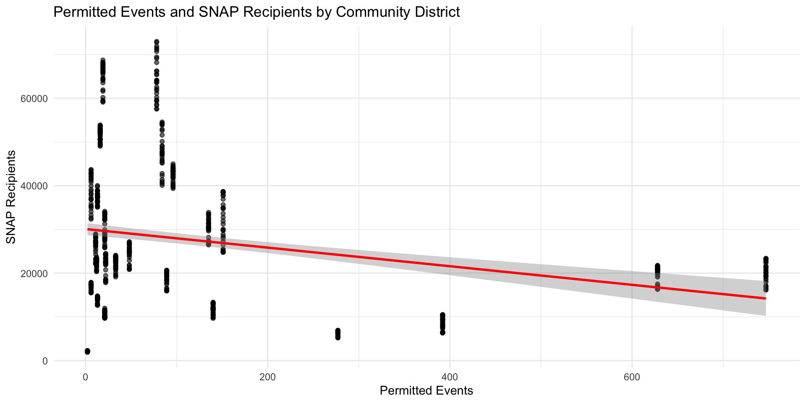
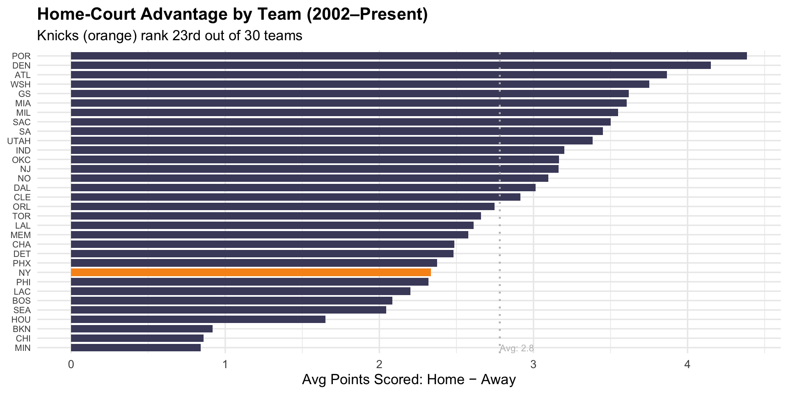
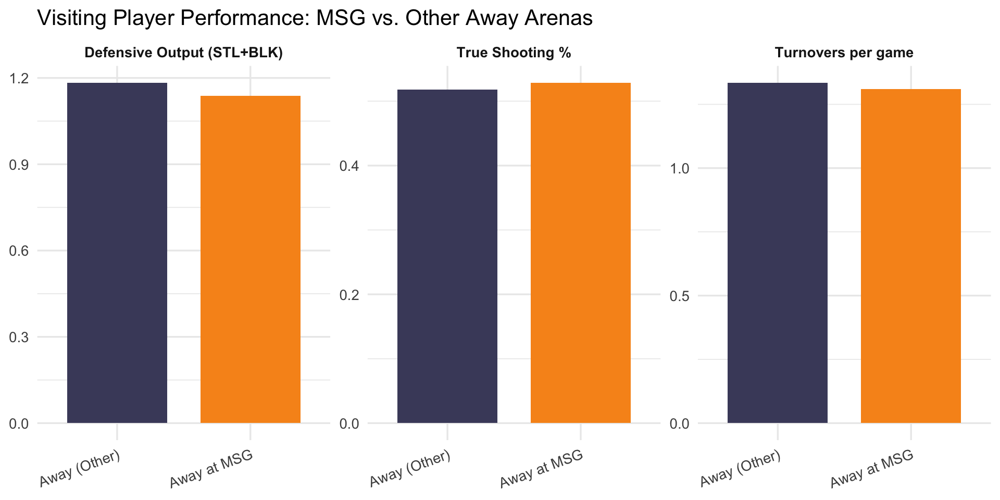
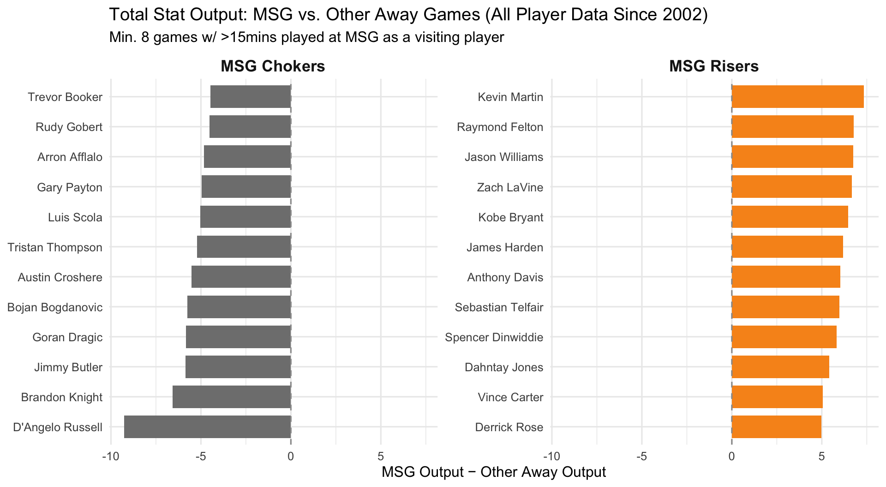
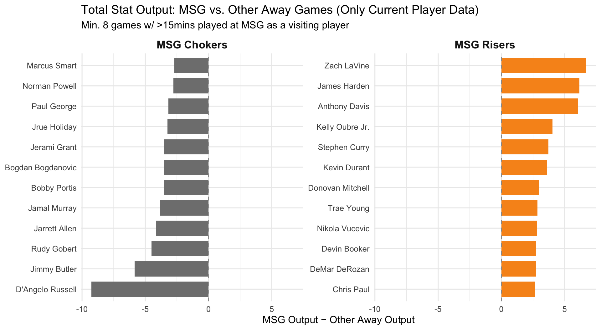
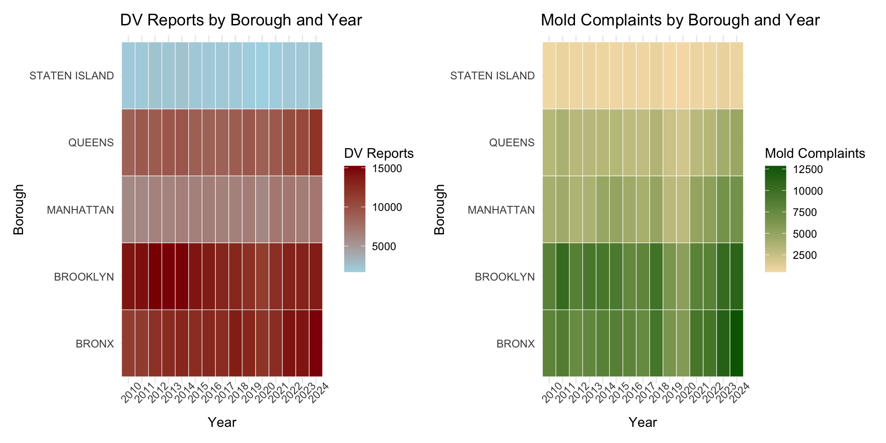
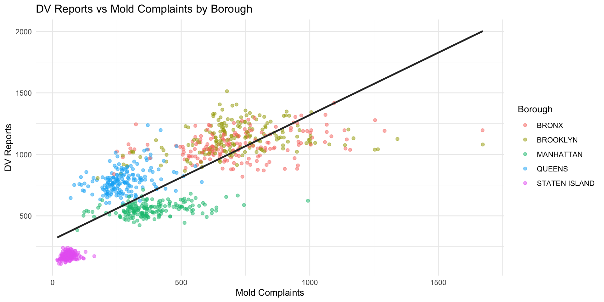
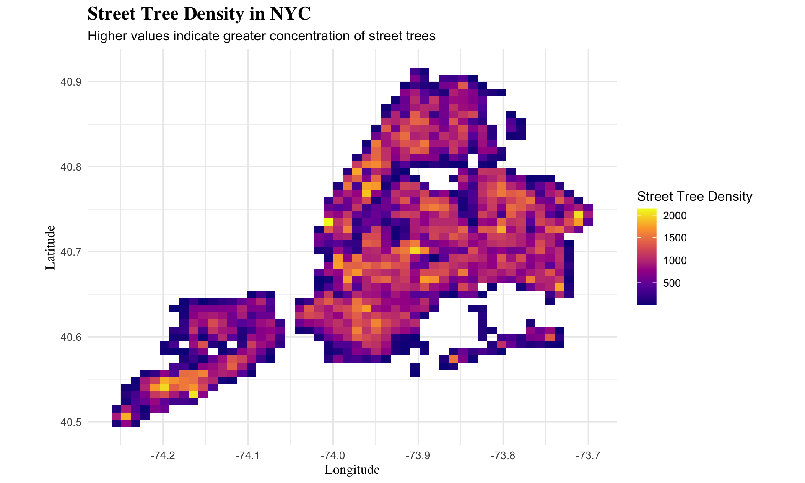
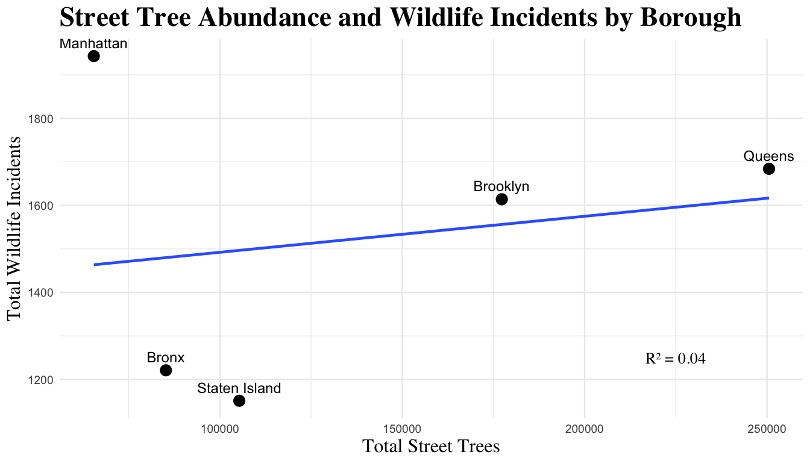

Pearson's Chi-squared test
data: contingency_table
X-squared = 8.627, df = 2, p-value = 0.01339Cramer V
0.1178 Christian A. Martinez
Brooklyn College, City University of New York (CUNY)
NYC Open Data Week 2026
I realized my students were learning to “juggle upside down.”
They weren’t struggling with the code—
they were struggling with the relevance.
👉 Learning actually sticks
Each student will briefly share:
These projects were developed as part of a graduate course in reproducible research using real NYC data.
My project examines the leading causes of death in NYC from 2007–2014, and indoor environmental complaints such as mold, indoor air quality, asbestos, and more from 2010 to the present. I wanted to explore these datasets and see whether there were any relationships between the two.
Can publicly available data be used to explore the conditions that best facilitate social connectedness, and thereby, most enhance quality of life?
Is there already data that points to “abstract” psychological constructs like well-being, loneliness, etc?
If so, is how can this data be acted upon or improved?
At present, NYC Open Data does not include the validated measures psychologists typically use to assess metrics like social connectedness and well-being.
However, there are various proxies.
Permitted events are a proxy for connectedness.
Number of SNAP Benefit Recipients is a (very) rough proxy for economic health (which is often associated with well-being).

A linear regression was conducted to determine whether number of permitted events predicts number of SNAP recipients.
The model was statistically significant, F(1, 723) = 45.34, p < .001, and explained approximately 6% of the variance in SNAP recipients (R² = .059).
The number of events was a significant negative predictor of SNAP recipients, b = −21.30, SE = 3.16, t(723) = −6.73, p < .001.

Results are significant and promising … but …
SNAP is an imperfect measure of holistic well-being (as well as economic). We need more “middle range” data.
We need better social gathering info (Reddit, Meetup, Eventbrite, etc.)
Community districts are imperfect units. Access is as important as location. Parks, for instance, were excluded from the analysis.
Survey data about abstract constructs to corroborate and inform the “practical” data.
Use of evidence to intervene in low-barrier ways (and tracking of those interventions).
Explore whether restaurants near art museums are more likely to have higher ratings than restaurants not close to museums.
Explore whether restaurants near museums are less likely to have no violation citations than restaurants not close to museums.
Creating an interactive map that pinpoints restaurants that are nearby museums.
The third data set is a Kaggle open data set created by Beridzeg45 called NYC Restaurants, which you can find at https://www.kaggle.com/datasets/beridzeg45/nyc-restaurants
We are visualizing the proportion of rating groups (high, medium, low) by if restaurants are near museums (yes,no).
Pearson's Chi-squared test
data: contingency_table
X-squared = 8.627, df = 2, p-value = 0.01339Cramer V
0.1178 The chi-square test shows X^2 = 0.64691 (0.65), df = 2, p = 0.7236 (0.72)
There is not a statistically significant relationship between restaurants being near museums and rating.
Cramer’s V tells us that the relationship is weak in strength.
We are visualizing the proportion of if a restaurant ever had violations (None, Critical) by if restaurants are near museums (yes,no).
Pearson's Chi-squared test with Yates' continuity correction
data: contingency_table_2
X-squared = 1.4637e-28, df = 1, p-value = 1 Near_Museum
Restaurant_Violation No Yes
Critical 30.38585 4.614148
None 509.61415 77.385852Cramer V
0.007957 The chi-square test shows X^2 = 6.2237e-30, df = 2, p = 1
Cramer’s V tells us that the relationship is very weak in strength (0.008128).
Fisher's Exact Test for Count Data
data: contingency_table_2
p-value = 0.7978
alternative hypothesis: true odds ratio is not equal to 1
95 percent confidence interval:
0.3339362 3.0818476
sample estimates:
odds ratio
0.9060068 Red: Low Rated Restaurants Purple: Average Rated Restaurants Dark Blue: High Rated Restaurants. Black: Museums
I believe that this project is relevant to New Yorkers who like to go to museums or restaurants and would like to plan an outing for a nice museum day in NYC. These types of New Yorkers would care about this type of project because they no longer have to rely on using Google to search each individual museum and instead have a map that is accessible and easy to use.
Madison Square Garden, “The Mecca of Basketball”
The narrative: MSG uniquely influences players’ performances under its bright lights.
But is that narrative supported by data?
Q1: Do the Knicks experience a special home-court advantage at MSG compared to other NBA teams at their home arenas?
Q2: Do visiting players perform differently at MSG than at other away arenas?
Q3: Which players benefit most (or least) from playing at MSG?
hoopR R package: NBA game and player box score data, 2002–present
The Knicks rank 23rd out of 32 teams (including SEA & NJ) in home-court scoring advantage, placing them in the bottom 1/3 of the league. Having MSG as a home-court may actually be more of a detriment than a benefit.
Follow-up question: do visiting players may play better at MSG compared to other away games?

At MSG, visiting players produce less defensive stats (p < .001), but shoot more efficiently (p < .001) and turn the ball over less (p = .029). Differences in raw points and offensive stat production were not significant.
Based on the second and third graphs, one may conclude NBA players across the league tend to be more “locked in” when they have the ball at MSG vs. other away arenas. But why do players produce less blocks and steals?
Let’s look at individual players.

The influence of playing at MSG on individual players’ statistical production depends on the player.
Knicks fans, do the players on the left seem overrated by other NBA fans? Do the players on the right evoke fear, anger, disdain, or general thoughts associated with villains?

The influence of playing at MSG on individual players’ statistical production depends on the player.
Knicks fans, do the players on the left seem overrated by other NBA fans? Do the players on the right evoke fear, anger, disdain, or general thoughts associated with villains?
Mold Exposure —> Psychological Stress
Psychological Stress —> Domestic Violence
Do domestic violence reports and residential mold complaints in NYC follow similar, correlated patterns over time?
311 Service Requests (Mold Complaints)
| Year | Month | Borough | Mold Complaints |
|---|---|---|---|
| 2010 | 01 - January | BRONX | 954 |
| 2010 | 01 - January | BROOKLYN | 779 |
| 2010 | 01 - January | MANHATTAN | 410 |
|
NYPD Complaint Data Historic (Domestic Violence Reports)
| Year | Month | Borough | DV Reports |
|---|---|---|---|
| 2010 | 01 - January | BRONX | 910 |
| 2010 | 01 - January | BROOKLYN | 1306 |
| 2010 | 01 - January | MANHATTAN | 541 |
DV Report Summaries
| total_reports | start_year | end_year | boroughs | avg_monthly |
|---|---|---|---|---|
| 669136 | 2010 | 2024 | 5 | 743.4844 |
|
Mold Complaint Summaries
| total_complaints | start_year | end_year | boroughs | avg_monthly |
|---|---|---|---|---|
| 388293 | 2010 | 2024 | 5 | 431.4367 |


Pearson's product-moment correlation
data: x and y
t = 43.206, df = 898, p-value < 2.2e-16
alternative hypothesis: true correlation is not equal to 0
95 percent confidence interval:
0.7992741 0.8418473
sample estimates:
cor
0.8217037
Pearson's product-moment correlation
data: x and y
t = 41.32, df = 893, p-value < 2.2e-16
alternative hypothesis: true correlation is not equal to 0
95 percent confidence interval:
0.7865287 0.8316650
sample estimates:
cor
0.8102952 DV Reports ~ Mold Complaints + Borough
Call:
lm(formula = `DV Reports` ~ `Mold Complaints` + Borough, data = aggregated_dv_mold_data)
Residuals:
Min 1Q Median 3Q Max
-257.79 -42.87 -3.50 37.93 432.04
Coefficients:
Estimate Std. Error t value Pr(>|t|)
(Intercept) 931.33548 15.54248 59.922 < 2e-16 ***
`Mold Complaints` 0.19574 0.01975 9.909 < 2e-16 ***
BoroughBROOKLYN 59.10721 9.02091 6.552 9.56e-11 ***
BoroughMANHATTAN -452.89589 11.17680 -40.521 < 2e-16 ***
BoroughQUEENS -198.79959 12.56259 -15.825 < 2e-16 ***
BoroughSTATEN ISLAND -768.91015 15.80207 -48.659 < 2e-16 ***
---
Signif. codes: 0 '***' 0.001 '**' 0.01 '*' 0.05 '.' 0.1 ' ' 1
Residual standard error: 85.58 on 894 degrees of freedom
Multiple R-squared: 0.9449, Adjusted R-squared: 0.9446
F-statistic: 3069 on 5 and 894 DF, p-value: < 2.2e-16[1] 10571.03DV Reports ~ Mold Complaints + Borough + Average Mold Resolution Days
Call:
lm(formula = `DV Reports` ~ `Mold Complaints` + Borough + avg_resolution_days,
data = aggregated_dv_mold_data)
Residuals:
Min 1Q Median 3Q Max
-258.31 -43.84 -2.01 38.16 403.40
Coefficients:
Estimate Std. Error t value Pr(>|t|)
(Intercept) 994.96968 17.64318 56.394 < 2e-16 ***
`Mold Complaints` 0.17645 0.01944 9.078 < 2e-16 ***
BoroughBROOKLYN 59.17001 8.78658 6.734 2.95e-11 ***
BoroughMANHATTAN -459.33996 10.92506 -42.045 < 2e-16 ***
BoroughQUEENS -207.33753 12.29650 -16.862 < 2e-16 ***
BoroughSTATEN ISLAND -781.57967 15.49694 -50.434 < 2e-16 ***
avg_resolution_days -3.03676 0.43241 -7.023 4.30e-12 ***
---
Signif. codes: 0 '***' 0.001 '**' 0.01 '*' 0.05 '.' 0.1 ' ' 1
Residual standard error: 83.35 on 893 degrees of freedom
Multiple R-squared: 0.9478, Adjusted R-squared: 0.9475
F-statistic: 2704 on 6 and 893 DF, p-value: < 2.2e-16[1] 10524.65Does environmental risk relate to social stress?
Flooding → environmental risk
Noise → social stress indicator
311 Noise & Flooding Complaints
E-Designations
NYC Hazard Mitigation Plan
Flooding varies across boroughs
Infrastructure differences likely
Small positive trend
Not statistically significant
Weak positive association
Not significant
Little variance explained
Open data reveals urban stress patterns
Flooding alone isn’t predictive
Framework for future analysis
Questions?
Wildlife incidents are reported across NYC every day.
But they are not evenly distributed across boroughs.
What explains these patterns?
At first glance, this might seem unlikely. Street trees line sidewalks, while many wildlife incidents occur in parks. But urban ecosystems are connected.
Street trees can support urban wildlife by providing:
• Food
• Shelter
• Travel pathways
• Over 680,000 street trees recorded across NYC
• Includes species, location, and health condition
• Used to estimate urban canopy coverage

Brighter colors indicate higher concentrations of street trees.
How many wildlife incidents occur for every 10,000 street trees.

Each point represents a NYC borough.
Raccoons appear most frequently in wildlife incident reports across boroughs.
Street tree abundance alone does not strongly predict wildlife incidents
Wildlife incidents vary across boroughs
Raccoon are the most commonly reported species
Other urban factors likely drive wildlife encounters
Explore their work and connect: